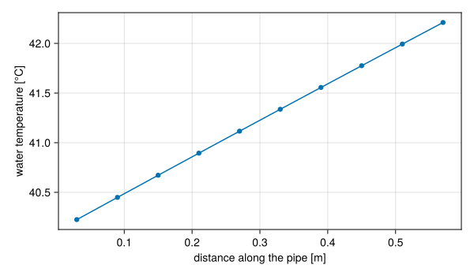

A first loop
Download this tutorial as a Julia script or a Jupyter notebook.
This tutorial builds the simplest useful model: a pump drives water around a closed loop through a heat exchanger and a heated pipe. Along the way it introduces the steps every STREAM.jl model goes through: create components, connect them, compile, solve, and read the results. It ends by checking the solution against the energy balance and against how turbulent friction scales with flow.
Components
Every component is a function that returns a model fragment, and takes its name as a keyword. The @named macro supplies the name from the variable it is assigned to.
using STREAMusing STREAM.Components: Pump, HeatExchanger, Channelusing STREAM.Assemblies: inseriesusing ModelingToolkit: @named, mtkcompile, unknowns, equations@named pump = Pump(3.0e4);A Pump given a number raises the pressure by that many pascals, whatever the flow. Here it is 0.3 bar.
@named hx = HeatExchanger(40.0);A HeatExchanger sets the temperature of the water leaving it, here to 40 °C, and takes away whatever heat that needs. It stands in for the secondary side of a real heat exchanger, so the loop reaches a steady state.
geometry = PipeGeometry_circular(0.6, 0.01)@named ch = Channel(; n=10, geometry, h_left=5000.0);A Channel is the heated pipe: 0.6 m long and 10 mm across, cut into 10 cells along its length. It has a left and a right face. Only the left is heated here, through a heat transfer coefficient of 5000 W/(m²·K) to a wall temperature we will set in a moment. With the default h_right=0 the right face is adiabatic.
Connections
The components are joined by a list of equations. inseries connects outlets to inlets in the order given, and naming the pump again at the end closes the loop.
connections = [ inseries(pump, hx, ch, pump), pump.inlet.p ~ 1.0e5, ch.T_wall_left .~ 100.0,];The second line fixes the pressure at one point. A closed loop determines only pressure differences, so one absolute value is needed, here 1 bar at the pump inlet. The third holds every cell's left wall at 100 °C. The .~ broadcasts the equation over the cells.
assembly joins the components and the connections into one model.
@named loop = assembly(connections, pump, hx, ch)length(equations(loop))47Compiling
mtkcompile analyses the equations, eliminates everything that can be computed directly, and generates the code a solver runs.
sys = mtkcompile(loop)foreach(println, unknowns(sys))ch₊inlet₊ṁ(t)
(ch₊T(t))[10]
(ch₊T(t))[9]
(ch₊T(t))[8]
(ch₊T(t))[7]
(ch₊T(t))[6]
(ch₊T(t))[5]
(ch₊T(t))[4]
(ch₊T(t))[3]
(ch₊T(t))[2]
(ch₊T(t))[1]Of all the variables in the model, the solver only has to find these: the coolant temperature in each cell and the mass flow. Everything else, the pressures, the friction, the outlet temperature, follows from them, and can still be read from a solution.
Solving
solve_steady finds the state where nothing changes in time. A loop has a trivial solution with no flow at all, so the solver needs a guess of the flow to start from.
sol = solve_steady(sys, [sys.ch.inlet.ṁ => 0.5]);Every variable of the model can be read by its name:
ṁ = sol[sys.ch.inlet.ṁ]0.5994973609055189T_out = sol[sys.ch.T_out]42.21106755912996The water flows at about 0.6 kg/s and leaves the pipe a little over 2 °C warmer. The temperature rises along the pipe as it picks up heat, more slowly towards the outlet as the water gets closer to the wall temperature:
using CairoMakiez = ((1:10) .- 0.5) .* 0.6 ./ 10fig = Figure(size=(600, 350))ax = Axis(fig[1, 1]; xlabel="distance along the pipe [m]", ylabel="water temperature [°C]")scatterlines!(ax, z, sol[sys.ch.T])fig
Checking the energy balance
At steady state the heat the wall gives the water is what the flow carries away. The channel reports the heat into each cell as q_wall:
Q_wall = sum(sol[sys.ch.q_wall])5539.6060185970855and the heat the flow carries is $\dot m \int c_p\,dT$ from the inlet to the outlet. With $c_p$ nearly constant over two kelvin, $\dot m\,c_p\,\Delta T$ is close:
T_in = 40.0Q_flow = ṁ * cₚ(H2O, (T_in + T_out) / 2) * (T_out - T_in)@assert isapprox(Q_wall, Q_flow; rtol=1e-6);They agree, to the small difference between $c_p$ at the mean temperature and its average over the range.
Changing the pump head
The pump head is a parameter of the compiled model, so a different value needs no rebuild. Pass it with the guess:
sol2 = solve_steady(sys, [sys.ch.inlet.ṁ => 0.5, sys.pump.dP_pump => 4.0e4])ṁ2 = sol2[sys.ch.inlet.ṁ]0.7062976634427925The pipe's friction follows Blasius, $f \propto \text{Re}^{-1/4}$, so its pressure drop goes as $f\,\dot m^2 \propto \dot m^{1.75}$. Raising the head from 0.3 to 0.4 bar should raise the flow by $(4/3)^{1/1.75}$:
@assert isapprox(ṁ2 / ṁ, (4 / 3)^(1 / 1.75); rtol=5e-3)(ṁ2 / ṁ, (4 / 3)^(1 / 1.75))(1.1781497459404253, 1.1786736203248172)The small difference is the water's viscosity, which changes with its temperature.
What next
Hydraulic networks builds loops with parallel branches, where the flow divides, and with gravity, where the temperature of the water drives the flow.